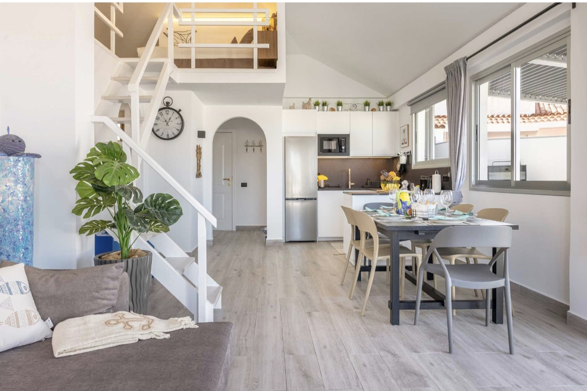
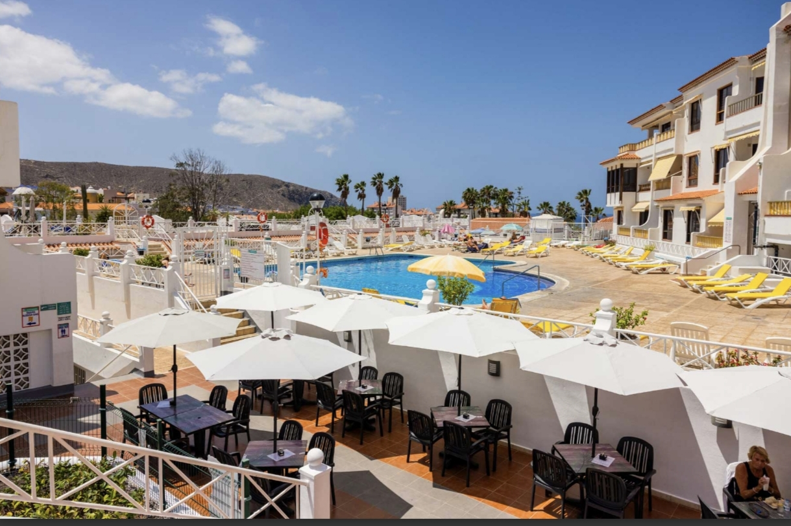
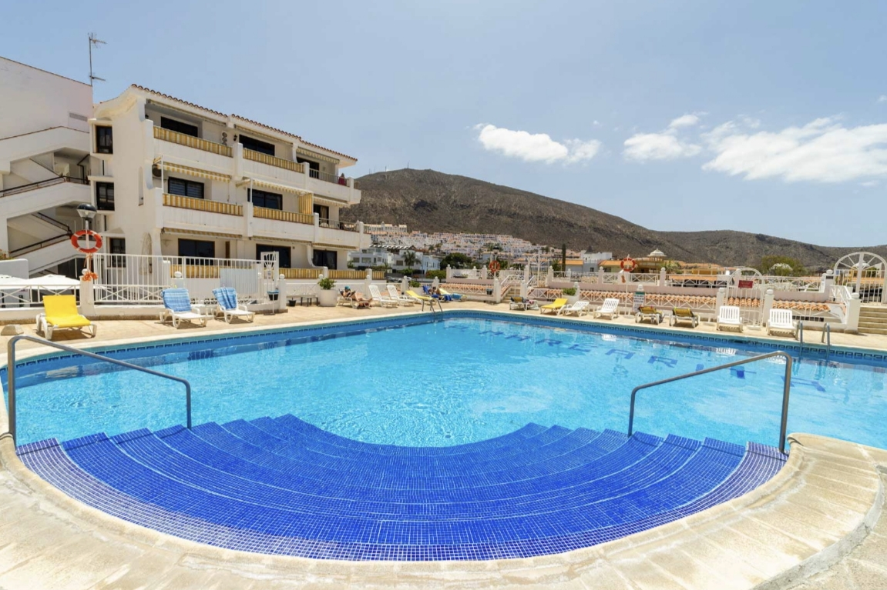
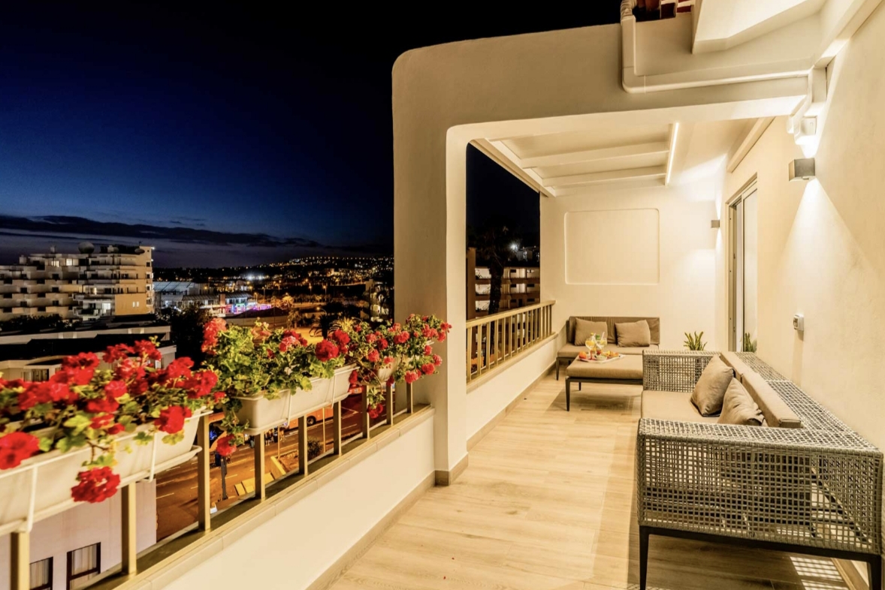
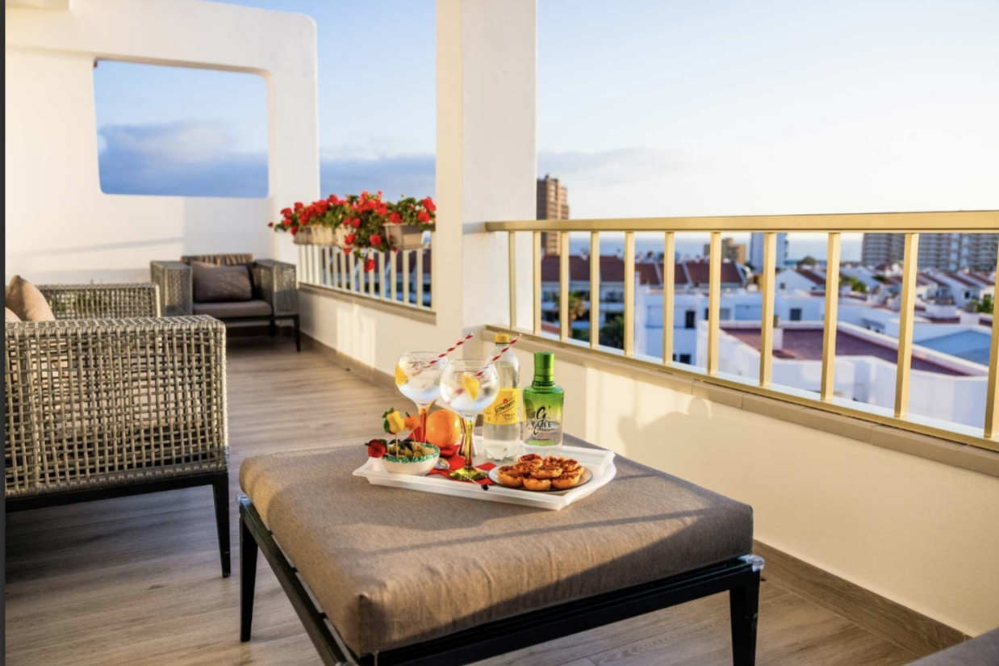
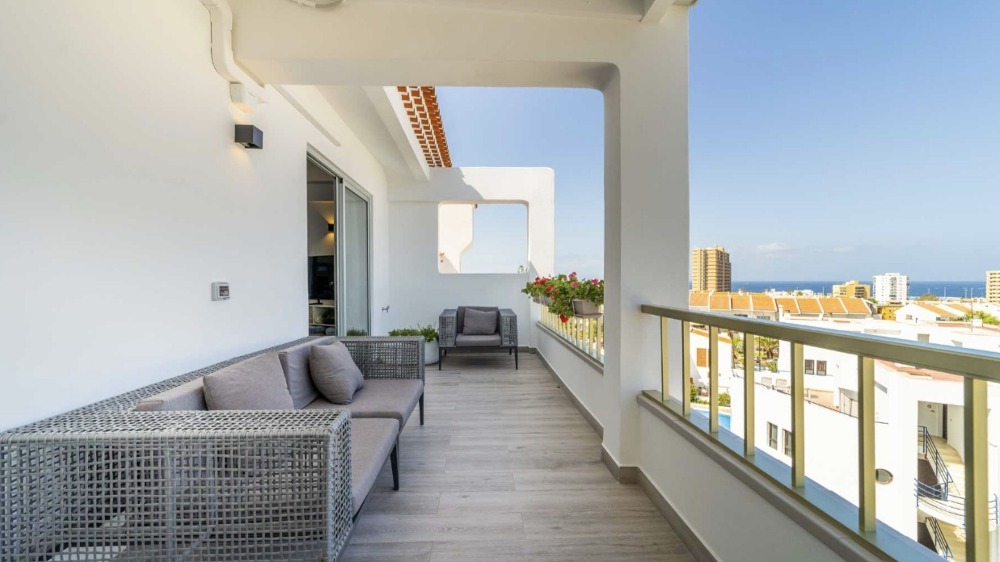
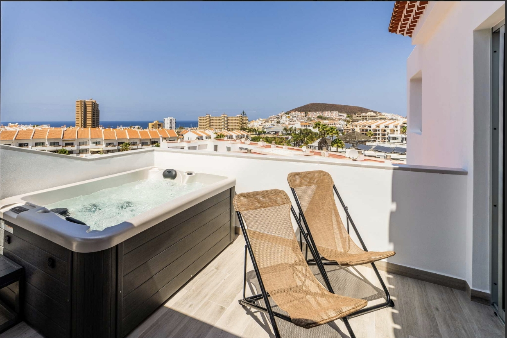
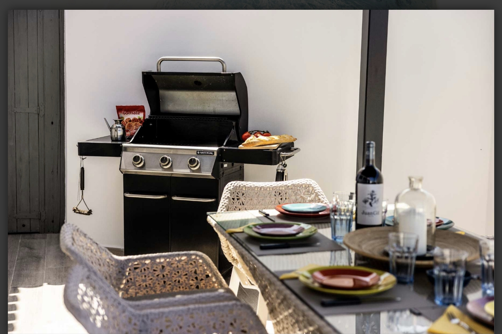

Un attico esclusivo nel cuore di Los Cristianos, uno dei centri turistici piu' vivaci e completi del sud di Tenerife. Situato all'ultimo piano di un edificio moderno, questo penthouse offre una vista panoramica a 180 gradi sul mare, sul porto e sul tramonto atlantico — uno spettacolo che si rinnova ogni sera.
Gli interni sono arredati con finiture di lusso, materiali pregiati e un design contemporaneo che coniuga eleganza e comfort. La terrazza sul tetto e' il cuore della proprieta': uno spazio privato dove rilassarsi, fare colazione vista mare o godersi l'apericena al tramonto.
La terrazza sul tetto e' il vero punto di forza: arredata con lettini, tavolo da pranzo esterno e vista mozzafiato sul mare. Perfetta per cene romantiche o aperitivi al tramonto.







Per chi cerca il meglio di Los Cristianos: posizione centrale, vista mare spettacolare e un livello di comfort che trasforma ogni giorno in una vacanza indimenticabile.
Contattaci per disponibilita' e prezzi
💬 Contattaci su WhatsApp